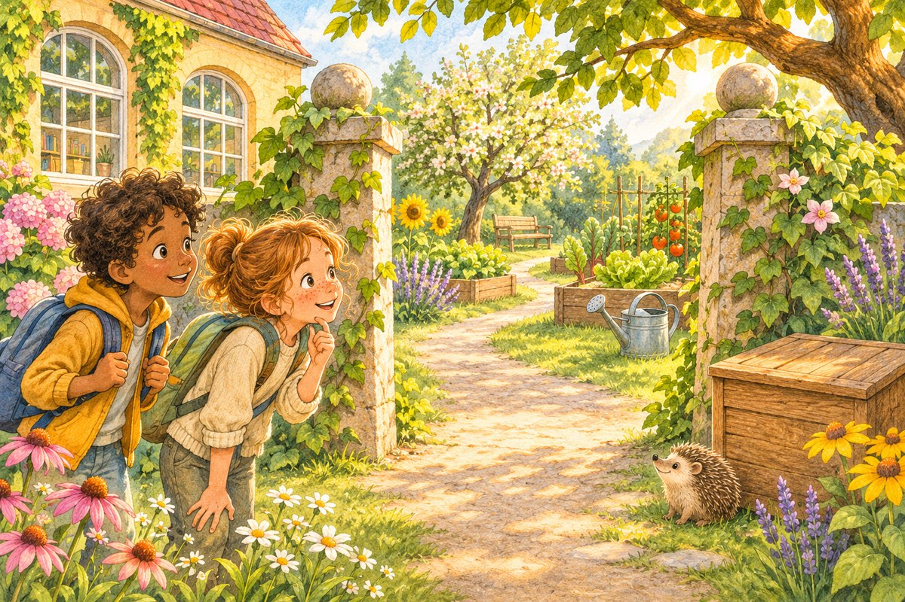

Die Samenkiste wartet
Habt ihr alle vier Codezahlen?
Tragt sie in der Reihenfolge der Stationen 1–4 ein.
Das Gartentor wächst wieder!
Zum Nachdenken: Wo habt ihr einander geholfen? Welche Strategie nehmt ihr mit?
Eine Samenkiste. Vier Rätsel. Ein gemeinsamer Plan. Helft Mila, Sami und Igel Piko, den Gartenzauber wiederzuwecken.
Mission vorbereiten ↗
Lesen, Rechnen, Geheimschrift und Natur: Jede Station schenkt euch eine Codezahl. Ihr könnt am Bildschirm prüfen oder ganz auf Papier spielen. Ohne Zeitdruck – jede Hilfe ist erlaubt.
Tragt sie in der Reihenfolge der Stationen 1–4 ein.
Zum Nachdenken: Wo habt ihr einander geholfen? Welche Strategie nehmt ihr mit?